Abitudini a modo tuo
Scegli un'icona, un colore e un'animazione, o parti da un modello. Ripeti nei giorni che vuoi o 3 volte a settimana in giorni qualsiasi, una volta al giorno o più volte, come 8 bicchieri d'acqua.
Fai il check-in ogni giorno, ricevi un promemoria quando serve e guarda crescere le tue serie. Un tracker di abitudini semplice e riservato per iPhone, iPad, Mac e Apple Watch.
Presto su App Store.
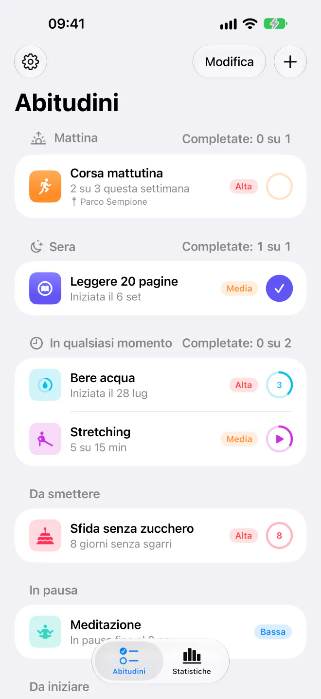
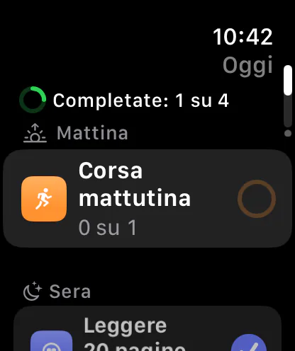
Segui le abitudini che vuoi creare e quelle che vuoi lasciarti alle spalle, a modo tuo.
Scegli un'icona, un colore e un'animazione, o parti da un modello. Ripeti nei giorni che vuoi o 3 volte a settimana in giorni qualsiasi, una volta al giorno o più volte, come 8 bicchieri d'acqua.
Dividi la giornata in Mattina, Pomeriggio e Sera, e trascina le abitudini nell'ordine che preferisci.
Per le abitudini misurate in minuti, come leggere 30 minuti al giorno. Avvia il timer dall'elenco, dal polso, dal Centro di Controllo o con il tasto Azione, e seguilo sulla schermata di blocco e nella Dynamic Island.
Fumo, zucchero, social fino a tardi: conta i giorni senza sgarri dall'ultimo.
Uno al giorno o distribuiti nella giornata (“3 su 8”), con i pulsanti Fatto e Fai il check-in direttamente nella notifica, e un riepilogo settimanale se vuoi.
Aggiungi due parole e un umore a qualsiasi giorno, e ritrovali nello storico e nelle statistiche dell'abitudine.
Salta un giorno se stai male, metti in pausa un'abitudine o tutte quante per una vacanza, senza interrompere le serie.
Percentuale di completamento, serie, una mappa della costanza, i tuoi giorni migliori e un calendario dell'anno per ogni abitudine.
Festeggia le serie di 7, 30 e 100 giorni, e condividi una serie come immagine.
“Fai il check-in di Corsa mattutina in HabitTracker” o chiedi “Cosa mi resta da fare oggi in HabitTracker”. Funziona anche da Spotlight, con il tasto Azione e dalle azioni rapide dell'icona dell'app.
Le abitudini in una barra laterale, con le statistiche di ciascuna accanto. Sul Mac, menu con abbreviazioni da tastiera, Annulla, e le abitudini di oggi nella barra dei menu.
Esporta tutto in CSV per un foglio di calcolo, ed esegui backup e ripristino tramite l'app File.
Sette icone per l'app, e l'app in English, Italiano, Français o Español, qualunque sia la lingua del dispositivo.
VoiceOver ovunque, con i grafici audio per le statistiche, e layout che reggono anche il testo più grande, in modalità chiara e scura.
Progettata per iOS 26, con Liquid Glass, feedback aptico e VoiceOver ovunque.
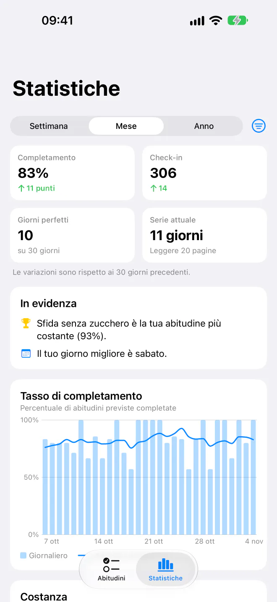
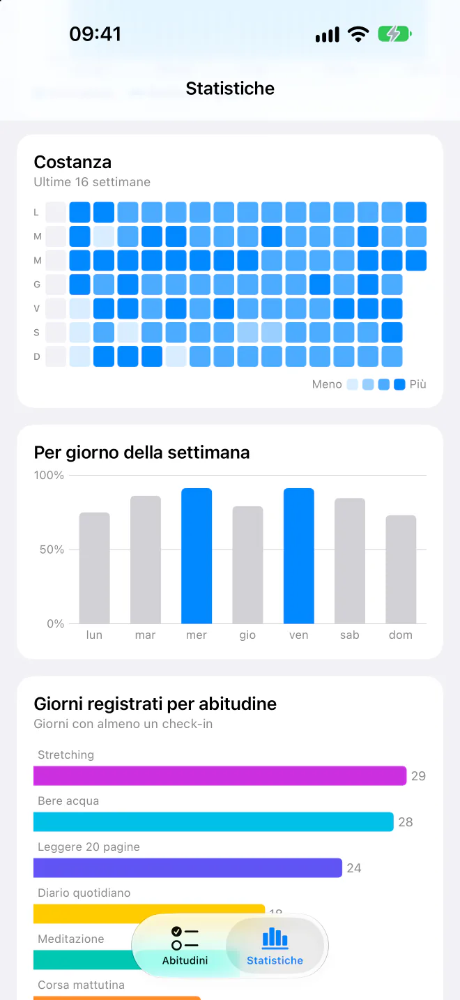
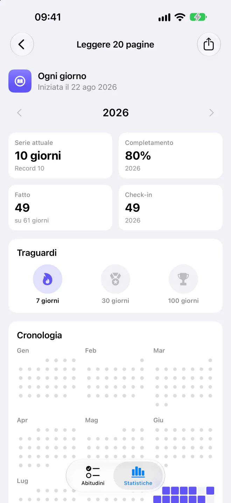
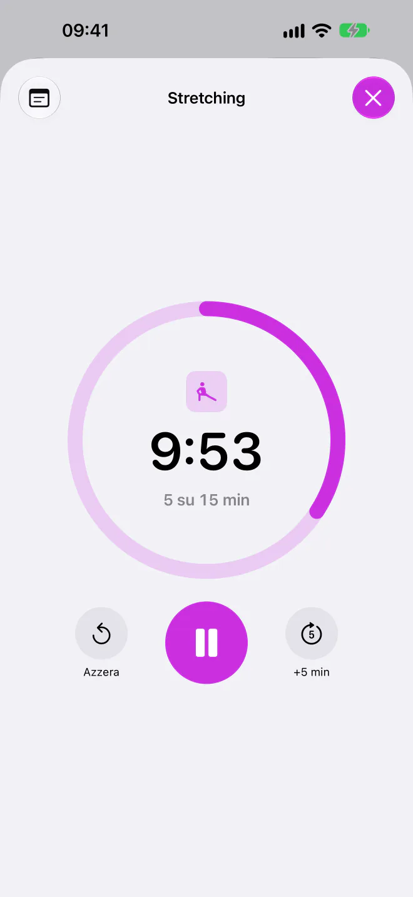
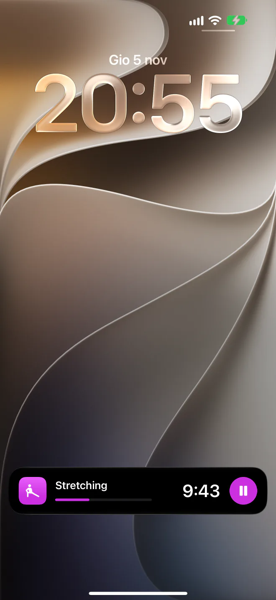
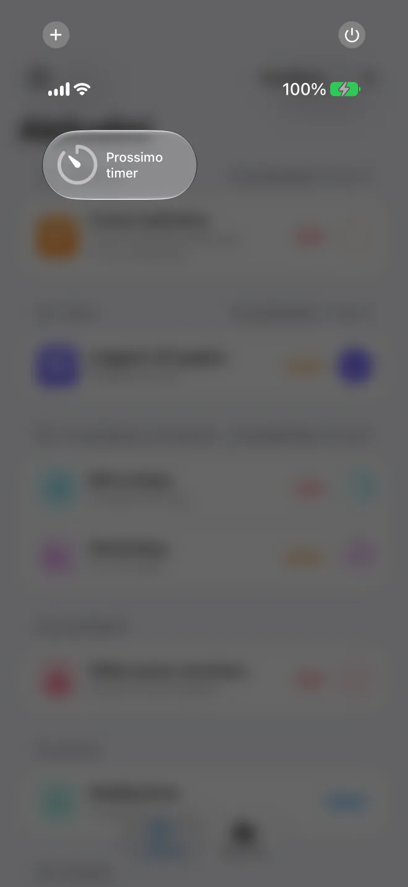
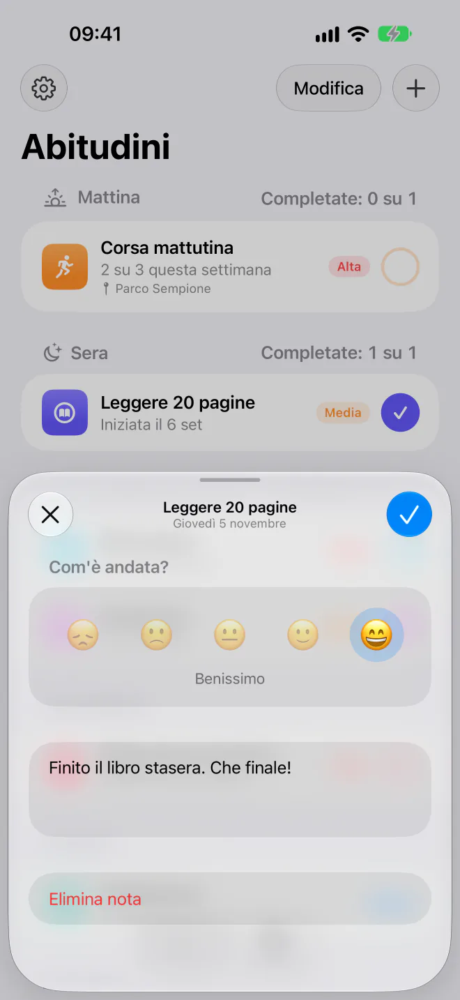
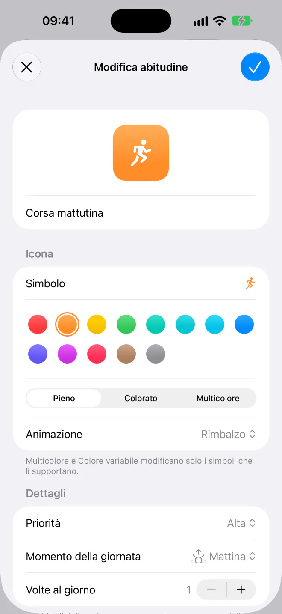
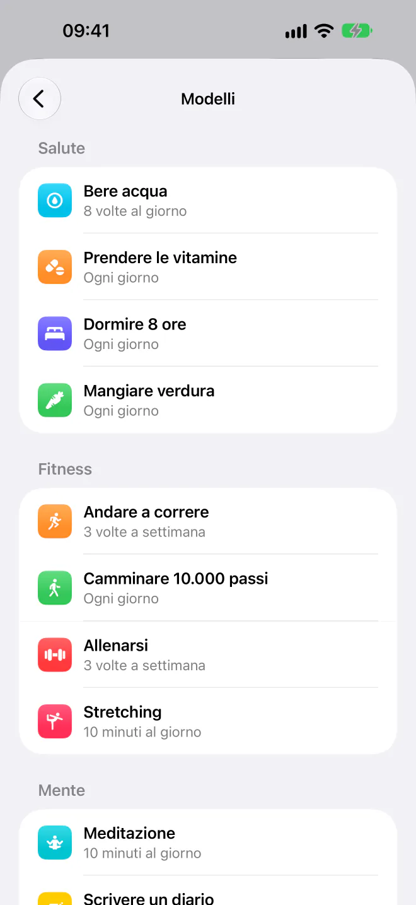
Scorri di lato per vederne altre.
L'app per Apple Watch mostra le abitudini di oggi e si sincronizza con l'iPhone, così puoi fare il check-in senza prendere il telefono.
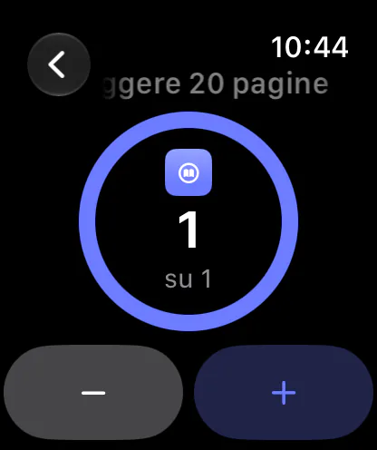
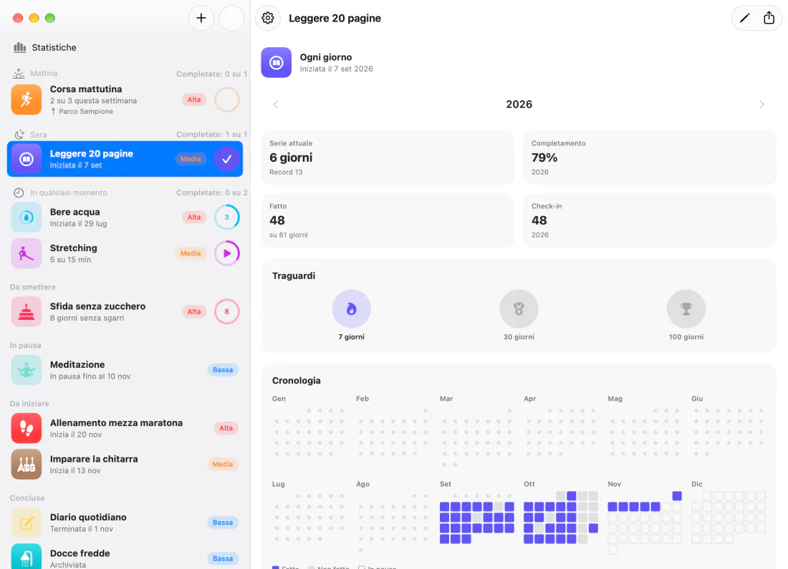
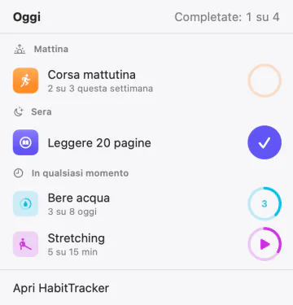
Una vera app per Mac, con la barra laterale, i menu e le abbreviazioni da tastiera che ti aspetti, e le abitudini di oggi a un clic, nella barra dei menu.
HabitTracker non raccoglie alcun dato. Quello che segui resta tra te e i tuoi dispositivi.
Apri l'app e inizia. Non c'è niente a cui registrarsi.
Niente pubblicità, niente analisi e nessun codice di terze parti.
Le abitudini restano sul tuo dispositivo, e l'Apple Watch si sincronizza direttamente con l'iPhone.
Domande, idee o qualcosa che non funziona come dovrebbe? Scrivici un'email e ti risponderemo.
Ci siamo quasi: prima arriva una beta su TestFlight, poi l'App Store. Questa pagina avrà il link appena sarà disponibile.
iPhone e iPad con iOS 26 o versioni successive, Mac con macOS 26 o versioni successive, e Apple Watch con watchOS 26 o versioni successive, abbinato a un iPhone.
Sì: Impostazioni › Assistenza › Contatta l'assistenza prepara un'email con i dettagli che ci aiutano a trovare un problema, come la versione dell'app, il dispositivo e la versione di iOS. Non include mai i nomi, le note o i luoghi delle tue abitudini, e vedi tutto prima di inviarla.
In Impostazioni › Backup, scegli Esegui backup su File e salva il file in un posto raggiungibile dal nuovo iPhone, come iCloud Drive. Poi, sul nuovo iPhone, scegli Ripristina da backup.
Sì. Scorri su un'abitudine e scegli Salta oggi, attiva In pausa quando modifichi un'abitudine, o usa Impostazioni › Vacanza per metterle tutte in pausa. I giorni in pausa non contano mai come mancati.